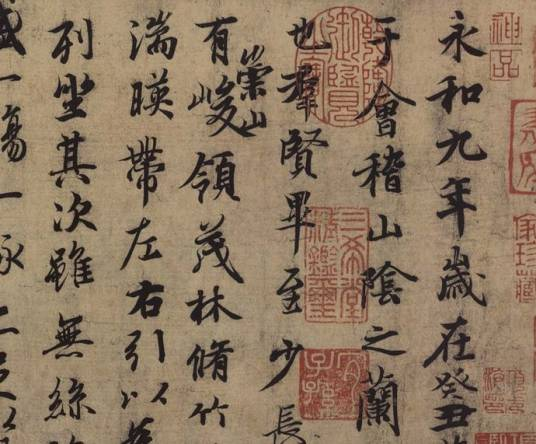
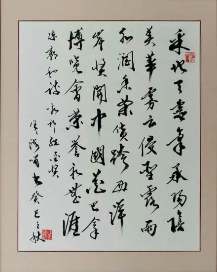
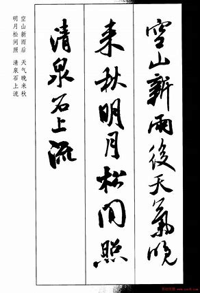
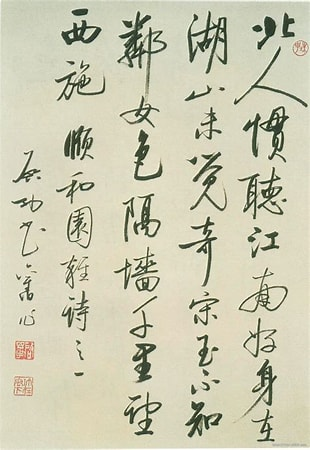
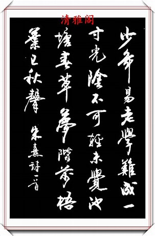

概览
书法是中国及深受中国文化影响过的周边国家和地区特有的一种文字美的艺术表现形式。包括汉字书法、蒙古文书法、阿拉伯书法和英文书法等。其“中国书法”，是中国汉字特有的一种传统艺术。从广义讲，书法是指文

字符号的书写法则。换言之，书法是指按照文字特点及其含义，以其书体笔法、结构和章法书写，使之成为富有美感的艺术作品。汉字书法为汉族独创的表现艺术，被誉为：无言的诗，无形的舞；无图的画，无声的乐等。
2018年12月，教育部办公厅关于公布绍兴文理学院为书法中华优秀传统文化传承基地 。2021年4月29日，中华人民共和国教育部经研究，决定成立教育部中国书法教育指导委员会
词语概念
基本解释[calligraphy]
书写艺术，多指用笔写字的艺术，分为硬笔和软笔两种。是一种文字表现的艺术形式。中国画与书法为缘，而多含文学之趣味。——蔡元培《图画
引证解释
1.古代史官修史，对材料处理、史事评论、人物褒贬，各有原则、体例，谓之“书法”。《左传·宣公二年》：“董狐，古之良史也，书法不隐。”唐代刘知几《史通·惑经》：“故知当时史臣各怀直笔，斯则有犯必死，书法无舍者矣。”宋谢采伯《密斋笔记》卷四：“《论语》书法之严，即《春秋》书法也。”明刘基《春秋明经·郑伐许郑伯伐许》：“盖与郑伐许、郑伯伐许之书法同矣。
2.文字的书写艺术。亦指书法作品。《南齐书·周颙传》：“少从外氏车骑将军臧质家得卫恒散隶书法，学之甚工。”宋钱愐《钱氏私志》：“元章书法之妙，今日可谓第一。”《儒林外史》第二八回：“作诗的从古也没有这好的。又且书法绝妙，天下没有第三个。”
3.指汉字形体。清叶名沣《桥西杂记·壹贰叁肆等字》：“至如秦汉碑，惟一二三书法不同。”
4.措辞方式。吕叔湘《标点琐议》：“《通鉴》书法，‘夜’一字为句，必有所承。上文未说何日之事，‘夜’字连下读，‘夜’字点断，意为‘到了那天夜里’；‘夜’字不断，意为‘趁夜里’。”
基本含义
播报编辑从表面字义理解，书法指书写的法度。生活中，书法一词另具备以下含义：第一，某幅书写作品的代称或者所有书写作品的统称；第二，一种艺术类别，一般指书写汉字的艺术。康有为在《广艺舟双楫》中说：“唐言结构，宋尚意趣”，由此可知唐代书法的法度追求最高、最严谨，唐代书法成就也是书法史上最顶峰的。
书法是中国特有的一种传统艺术。中国汉字是劳动人民创造的，开始以图画记事，经过几千年的发展，演变成了当今的文字，又因祖先发明了用毛笔书写，便产生了书法，古往今来，均以毛笔书写汉字为主，至于其他书写形式，如硬笔、指书等，其书写规律与毛笔字相比，并非迥然不同，而是基本相通。

狭义
狭义而言，书法是指用毛笔书写汉字的方法和规律。包括执笔、运笔、点画、结构、布局（分布、行次、章法）等内容。例如，执笔指实掌虚，五指齐力；运笔中锋铺毫；点画意到笔随，润峭相同；结构以字立形，相安呼应；分布错综复杂，疏密得宜，虚实相生，全章贯气；款识字古款今，字大款小，宁高勿低等。
书法的内涵主要包括以下几个方面的内容：
1、书法是指以文房四宝为工具抒发情感的一门艺术。工具的特殊性是书法艺术特殊性的一个重要方面。借助文房四宝为工具，充分体现工具的性能，是书法技法的重要组成部分。离开文房四宝，书法艺术便无从谈起。
2、书法艺术以汉字为载体。汉字的特殊性是书法特殊性的另一个重要方面。中国书法离不开汉字，汉字点画的形态、偏旁的搭配都是书写者较为关注的内容。与其他拼音文字不同，汉字是形、音、义的结合体，形式意味很强。
古人所谓“六书”，是指象形、指事、会意、形声、转注、假借六种有关汉字造字和用字的方法，它对汉字形体结构的分析极具指导意义。
3、书法艺术的背景是中国传统文化。书法植根于中国传统文化土壤，传统文化是书法赖以生存、发展的背景。我们今天能够看到的汉代以来的书法理论，具有自己的系统性、完整性与条理性。与其他文艺理论一样，书法理论既包括书法本身的技法理论，又包含其美学理论，而在这些理论中又无不闪耀着中国古代文人的智慧光芒。比如关于书法中如何表现“神、气、骨、肉、血”等范畴的理论，关于笔法、字法、章法等技法的理论以及创作论、品评论等等，都是有着自身的体系的。
4、书法艺术本体包括笔法、字法、构法、章法、墨法、笔势等内容。书法笔法是其技法的核心内容。笔法也称“用笔”，指运笔用锋的方法。字法，也称“结字”、“结构”，指字内点画的搭配、穿插、呼应、避就等等关系。章法，也称“布白”，指一幅字的整体布局，包括字间关系、行间关系的处理。墨法，是用墨之法，指墨的浓、淡、干、枯、湿的处理。
广义
从广义讲，书法是指语言符号的书写法则。换言之，书法是指按照文字特点及其涵义，以其书体笔法、结构和章法写字，使之成为富有美感的艺术作品。
随着文化事业的发展，书法己不仅仅限于使用毛笔和书写汉字，其内涵己大大增加。如从使用工具上讲，仅笔这一项就五花八门，毛笔、硬笔、电脑仪器、喷枪烙具、雕刻刀、雕刻机、日常工具（主要是指质地比较坚硬的，能用来书写的五金、生活工具）等。颜料也不单是使用黑墨块，墨汁、粘合剂、化学剂、喷漆釉彩等五彩缤纷，无奇不有；品种之多，不胜枚举。从执笔方式上看，有的用手执笔、有的用脚执笔，就是用其他器官执笔的也不乏其人，甚至有的人写字根本就不用笔，如“指书”“挤漏书”等；从书写文种上说，并非汉字一种，有的少数民族文字也登上了书法艺坛，蒙文就是一例；
中国书法的五种主要书体，篆书体（包含大篆、小篆）、隶书体（包含古隶、今隶）、楷书体（包含魏碑、正楷）、行书体（包含行楷、行草），草书体（包含章草、小草、大草、标准草书）。

起源

中国的书法艺术开始于汉字的产生阶段，“声不能传于异地，留于异时，于是乎文字生。文字者，所以为意与声之迹。”（语出《书林藻鉴》，马宗霍辑）因此，产生了文字。书法艺术的第一批作品不是文字，而是一些刻画符号--象形文字或图画文字。
汉字的刻画符号，首先出现在陶器上。最初的刻画符号只表示一个大概的混沌的概念，没有确切的含义。
距今八千多年前，黄河流域出现了磁山、裴李岗文化，在裴李岗出土的手制陶瓷上，有较多的类文字符号，这种符号，是先民们的交际功能、记事功能与图案装饰功能的混沌结合，这些虽非现人能识别的汉字，但确是汉字的雏形。
紧接着距今约六千年前的仰韶文化的半坡遗址，出土了有一些类似文字的简单刻画的彩陶。这些符号已区别于花纹图案，把汉文字的发展又向前推进了一步。这可以说是中国文字的起源。
接着有二里头文化和二里岗文化。二里头文化考古发掘中发现有刻画记号的陶片，其记号共有二十四种，有的类似殷墟甲骨文字，都是单个独立的字。二里岗文化已发现有文字制度。这里曾发现过三个有字的骨头，两件各一个字，一件十个字，似为练习刻字而刻。这使得文明向前又迈进了一大步。
原始文字的起源，是一种模仿的本能，用于形象某个具体事物。它尽管简单而又混沌，但它已经具备了一定的审美情趣。这种简单的文字因此可以称之为史前的书法。
演变历史
书法的演变一般是指书法字体的演变。一般说来魏晋时期既是书体的终结期，又是书法技法的集大成期。
中国书法历史悠久，书体沿革流变，书法艺术异采迷人。从甲骨文、金文演变而为大篆、小篆、隶书，至东汉、魏、晋的草书、楷书、行书诸体，书法一直散发着独特的艺术魅力。
从象形文字到甲骨文，商周、春秋还有汉代的简帛朱墨手迹，唐楷的法度，宋人尚意，元明尚态，清代的碑帖之争等书法演进。
近现代
在书坛走向多元化的今天，书法艺术升华到观念变革的高层次，这无疑是迈了一大步。书法现代性并不是简单地取决于书法艺术的形式、结构、线条等外在面貌，而是取决于内在精神的现代化。书法现代性的精神是指当代书法艺术所体现、传导的现代社会的价值趋向。
近现代书坛，仍然是碑派占主流地位。但和晚清碑派不同，取法汉碑和上古篆书的书法家在这一时期较多。
很多书法大师如林散之，沙孟海，陆维钊等等在1949年之前即已从事书法创作，但直至文化大革命之后他们已近耄耋之年才以书法闻名。1949年之后到毛泽东去世的近三十年时间内，书法基本上不受重视。当时的人们正以极大的热情建设一个新中国。书法被认为是旧传统的代表。
近代书法艺术的色彩斑斓，与其书家队伍的空前复杂有直接干系。或许因距离太近，这段风景比此前任何时期都清晰明透
五种书体
篆书
篆书是大篆、小篆的统称。甲骨文，距今已有三千年历史，是传世最早的可识文字，主要用于占卜。笔法瘦劲挺拔，直线较多。起笔有方笔、圆笔，也有尖笔，手笔“悬针”较多。大篆指金文、籀文、六国文字，它们保存着古代象形文字的明显特点。小篆也称“秦篆”，是秦国的通用文字，大篆的简化字体，其特点是形体均匀齐整、字体较籀文容易书写。
隶书
隶书，亦称汉隶，是汉字中常见的一种庄重的字体，书写效果略微宽扁，横画长而直画短，呈长方形状，讲究“蚕头雁尾”、“一波三折”。隶书起源于秦朝，由程邈整理而成，在东汉时期达到顶峰，对后世书法有不可小觑的影响，书法界有“汉隶唐楷”之称。如《汉鲁相韩勑造孔庙礼器碑》、又称《韩明府孔子庙碑入《鲁相韩勑复颜氏繇发碑》、《韩勑碑》等。汉永寿二年（156年）刻，隶书。纵227.2厘米，横102.4厘米。藏山东曲阜孔庙。无额。四面刻，均为隶书。碑阳十六行，行三十六字，文后有韩勑等九人题名。碑阴及两侧皆题名

楷书
楷书也叫正楷、真书、正书。从程邈创立的隶书逐渐演变而来，更趋简化，横平竖直。楷书有楷模的意思，张怀瓘《书断》中已先谈到过。六朝人仍习惯地用着它，例如羊欣《采》文，王僧虔《论书·韦诞传》中云：“诞字仲将，京兆人，善楷书。”那是“八分楷法”的简称。到北宋才以之代替了正书之名，其内容显然和古称是不一样的，名异实同和名同实异之例，大概有以上这些。
行书
行书是在隶书的基础上发展起源的，介于楷书、草书之间的一种字体，是为了弥补楷书的书写速度太慢和草书的难于辨认而产生的。“行”是“行走”的意思，因此它不像草书那样潦草，也不像楷书那样端正。实质上它是楷书的草化或草书的楷化。楷法多于草法的叫“行楷”，草法多于楷法的叫“行草”。
草书
草书是汉字的一种字体，特点是结构简省、笔画连绵。形成于汉代，是为了书写简便在隶书基础上演变出来的。有章草、今草、狂草之分，在狂乱中觉得优美。《说文解字》中说：“汉兴有草书”。草书始于汉初，其特点是：存字之梗概，损隶之规矩，纵任奔逸，赴速急就，因草创之意，谓之草书。
现代书体
燕体，也叫燕书、燕书体，是中国书法的一种新书体，是继行书、草书、隶书、篆书、楷书之后的第六种书体,是当代书法家马永安所创，2010年2月13日,马永安获中国书法第六书体燕体著作权 。
燕体入笔露锋，收笔出锋，中锋用笔,右下取势，取顺势，舒展流畅，燕体书法对五种书体结构和点画、使转运笔均有借鉴，但它牢固的基础和前提还是正书书法字体。符合主流审美取向，更吸引眼球，燕书字体的运笔，停顿少无折笔，运用篆书草书的笔法，顺势运笔,流畅自然，毫无做作，开拓了书法艺术新的审美空间。
燕体书法的点画，变化丰富，与传统书法相比，反其道而行之，是书法书体的创新。燕体书法，入笔盘笔，细如纤丝，笔锋在外。收笔若轻若重，轻若毫发，重若阵云，万毫齐发，收笔不收锋，势如破竹，痛快淋漓，一泻千里，给人愉悦之感。燕体结体富于变化，字字有神，忽见燕语檐下，又见燕翔蓝天。燕形、燕态、燕情，毕现燕之精髓。 心悟真谛，将燕之美融于书艺之中，处处可见其美，美在灵动，美在清秀，美在流畅之势，美在自然天成。故得名为燕体，又名燕书体
返回目录
Copyright ©
2023-12-12
ALL Rights Reserved
|